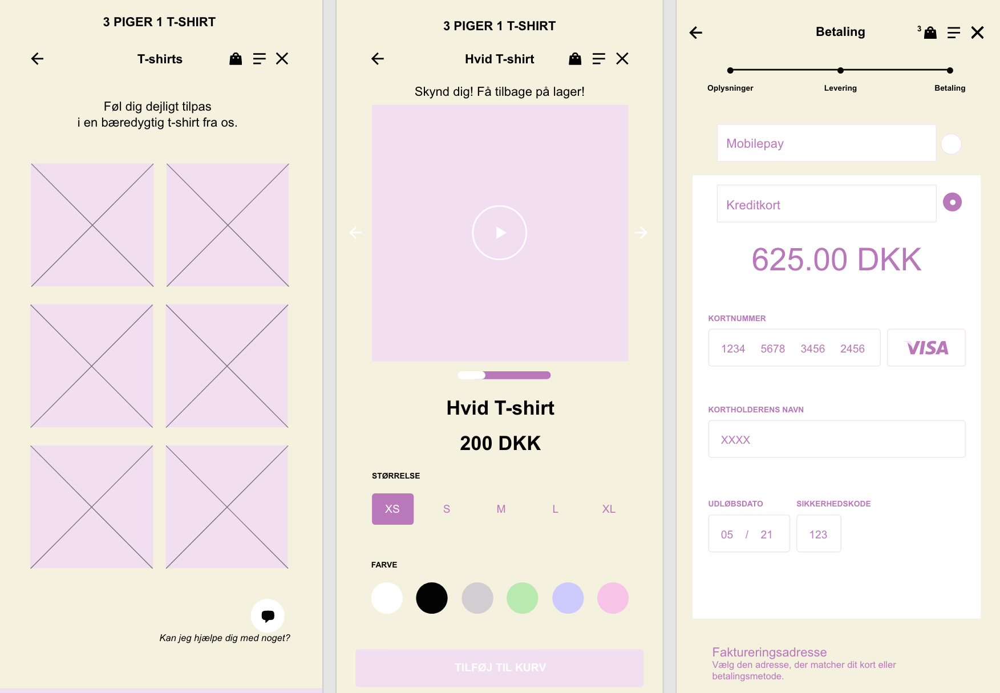
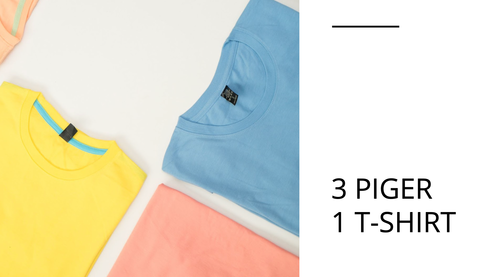

Grundlæggende UX
I tema 3, grundlæggende UX, skulle jeg lære hvordan jeg via UX-metoder kan præsentere mit produkt, samt formidle mine research- og testresultater.
Jeg fik en grundlæggende forståelse for samspillet mellem brugere og brugergrænseflader. Derudover hvilke teorier, værktøjer og metoder som jeg skulle benytte til min research, mine tests af ideer og mit design. I dette forløb skulle jeg lave et moodboard og et styletile, som jeg havde stiftet bekendtskab til i det tidligere forløb, tema 2. Vi skulle i slutningen af dette tema aflevere en prototype til en t-shirt webshop, lavet i Adobe XD.

Inden jeg begyndte på min prototype, startede jeg ud med at indsamle og anvende empiriske data om brugere og deres brugssituationer.
Jeg startede ud med at lave fire forskellige research-metoder, desk-, oberservations-, interview- og surveyresearch. Ud fra dem fandt jeg ud af hvad brugere ligger vægt på, på en webshop. Bl.a. fandt jeg ud af at brugeren er mere tilbøjelig til at købe noget hvis man kan betale over mobilepay, da brugeren derfor ikke behøver at rejse sig, og hente sit betalingskort. Jeg fandt også ud af brugeren tilmelder sig nyhedsbrev, hvis der bliver tilbudt rabat, eller andre former for goder.
Undervejs i processen blev jeg introduceret til hvordan keywords, copy- og micro copywriting, i samspil med UI konventioner, har betydning for brugerens oplevelse af et digitalt produkt. Dem inkorporerede jeg i min endelige protype ved at indsætte et keyword som bæredygtighed.
Da jeg havde lavet min første prototype i Adobe XD, skulle mine medstuderede give feedback på den. Det gjorde de ved brug af en tænke-højt-test, og jeg gjorde det samme på deres prototyper. Til sidst skulle jeg pitche min webshop samt prototype til min studiegruppe.
